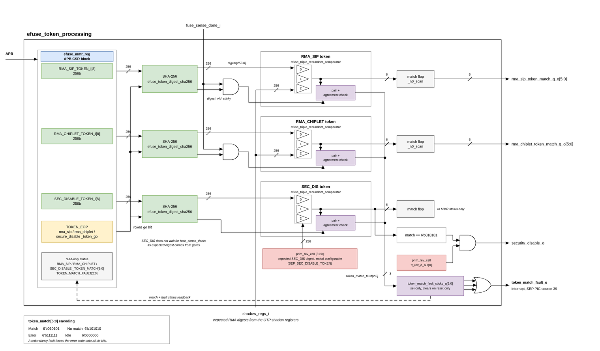

Token Processing
Maintaining a known, measurable state of the SEP system is a core requirement to ensure trust and security. Consequently, changing the security state of SEP is a very high security operation that must be protected. Tokens are high security password strings which are used to alter the security state of SEP. They are used to initiate RMA LC state transitions as well as disable security features. Tokens are:
-
Security Disable (SEC_DIS) bypasses fuse sensing
-
Package RMA (RMA_SIP) used in LC state machine
-
Chiplet RMA (RMA_CHIPLET) used in LC state machine
The tokens directly affect the life cycle state machine processing and fuse sensing. so token processing is naturally done in the OTP Controller. Tokens are entered via the JTAG port into a dedicated eight-word register array per token, held in the eFuse MMR block, for match processing described in the next section. Those arrays have the following important properties:
-
Non-scannable
-
Non-resetable
Token Generation, Storage and Provisioning
All token processing besides final provisioning takes place within the confines of an HSM, a very high security environment. RTL constant tokens are embedded into the design database very late in the development process to ensure minimal exposure while OTP fuse tokens are provisioned at manufacturing test time. All tokens are under tight security control.
Token values are initially generated within the HSM using a secure TRNG, KDF and other facilities. Values to keep track of are the token itself and any encoded value such as the SHA256 hash value of it for example.
All token values are securely stored in the HSM and securely transmitted to the remote tester which programs any OTP fuse values. In the case of SEP tokens, we provision the 256-bit hash digest values into the OTP fuse bank. Values could be global or unique per device. Examples of unique values are the UID, private ECDSA signing keys, and special purpose tokens, granting special TBD privileges on a per device basis. Processing at the device level can handle each scenario.
Token Matching Mechanism and Attack Countermeasures
The tokens are 256-bit values which are processed in an analogous manner as passwords. We have tokens:
-
RMA_SIP_TOKEN
-
LC state
-
Digest RMA_SIP_TOKEN_DIGEST in OTP
-
-
RMA_CHIPLET_TOKEN
-
LC state
-
Digest RMA_CHIPLET_TOKEN_DIGEST in OTP
-
-
SEC_DIS_TOKEN
-
Security disable
-
Digest SEC_DIS_TOKEN_DIGEST in hardware gates (global)
-
The separate security disable token SEC_DIS_TOKEN overrides the entire LC control mechanism; the resulting feature control follows the SEC_DIS rules in the Lifecycle Controller chapter. This feature is an emergency fallback intended to enable A0 silicon debugging and shall be permanently disabled in subsequent A1/B0 revisions via metal mask only ECO.
The tokens are not directly compared with an internal value stored in OTP but instead first hashed using the SHA2-256 cryptographic hash algorithm. OTP holds the hash value, also known as the TOKEN_DIGEST. The OTP controller has a local, dedicated SHA256 hardware accelerator unit per token to perform the hashing of the input token.
token_match = (SHA256(token[255:0]) == <NAME>_TOKEN_DIGEST[255:0])
The comparison itself is purely combinational, and neither the presented token nor the expected digest is ever stored in a scannable register. The SHA256 engine ahead of it is sequential and holds the computed digest until the next hash is started; see Token Match Sequence.
The stored secrets are very security sensitive so special care must be taken when provisioning them in the chiplet. OTP_secret[255:0] is a SHA256[token] which is stored in the OTP. The SEC_DIS token is handled differently with its SHA256[token] value stored in hardware gates. (aka RTL secret) rather than in OTP. It is global to all devices by its nature. In both cases, the hash preimage attack to deduce the input token value is considered practically infeasible so even if the secret digest is extracted from OTP or gates, the token will remain unknown to the attacker.
The SEC_DIS secret is stored only in gates and not in OTP. SEC_DIS is an emergency feature to unlock when the OTP is not functional so that the chip can still be unlocked. See Security Disable (SEC_DIS).
Token Match Sequence
Each token has its own eight-word array in the eFuse MMR block, its own SHA256 engine and its own set of comparators. JTAG:
-
writes the 256-bit token as eight 32-bit words to
RMA_SIP_TOKEN_I,RMA_CHIPLET_TOKEN_IorSEC_DISABLE_TOKEN_I -
writes the matching go bit in
TOKEN_EOP, which pulses the hash start -
polls
RMA_SIP_TOKEN_MATCH,RMA_CHIPLET_TOKEN_MATCHorSEC_DISABLE_TOKEN_MATCHfor the 6-bit result
Starting a hash clears that token’s digest-valid bit, so the comparators report idle rather than a stale result while a digest is in flight.
The two RMA comparisons additionally wait for fuse sensing to complete, because their expected digests come from the OTP shadow registers. The SEC_DIS comparison does not, because its expected digest comes from gates. That is what lets SEC_DIS unlock a part whose fuse sensing is broken.
Matching Logic Countermeasures
The actual matching logic is a vulnerable attack point via FIB or fault injection. This is protected by using triple-redundant matching logic on fully differential signals resulting in a 6-bit output as illustrated below.
This is not a majority vote scheme. While a comparison is in flight two invariants must both hold: every comparator must drive a genuine differential pair, and all three comparators must agree with each other. Together these admit only the match and mismatch codes, so a fault manifests as one of two conditions:
-
a comparator whose differential pair collapsed, both rails at the same value
-
comparators that disagree with each other, which is the case a majority vote would wave through as a match
Either one raises a redundancy fault, which may indicate a tampering
attack. The fault forces the error code onto all six output bits, so
every downstream feature gate fails closed, and it sets the sticky bit
for that token in the TOKEN_MATCH_FAULT register. The three sticky bits are
combined into a single interrupt to the SEP CPU on PIC source 40; see
SEP CPU Interrupt Vector Map
for the full slot map. Firmware reads the register to identify which
comparators faulted. The fault bits are software-read-only and clear only on
reset, so a fault cannot be hidden by retrying with a valid token and the PIC
source stays asserted. Firmware must mask PIC source 40 after it has observed
the fault; there is no write-one-to-clear that drops the line, and an unmasked
handler re-enters.
The detector does not catch a common-mode fault. If all three comparators flip the same way they still agree and each still drives a legal differential pair, so the output is a legal match or mismatch code and no sticky bit is set. Invert of a match is a legal mismatch; invert of a mismatch is a legal match (fail-open). "Any deviation" here means a collapsed pair or a disagreement between instances, not full coverage of every possible fault.
SEP token processing shows the token-processing path and the matching signal distributed to its consumers.

The 6-bit matching signal is distributed as is to each individual point of use i.e. logic where individual features are enabled or disabled. Distributing the final enable logic to each feature diversifies the gate keeping and helps prevent global unlocking.
Match = token_match[5:0] = 6’b010101 Mismatch = 6’b101010 Error = 6’b111111
Post Token Matching Handling
A token match does not by itself change the life cycle state. It authorizes a change, and the state is then updated by one of two paths described in OTP fuse controller in this chapter.